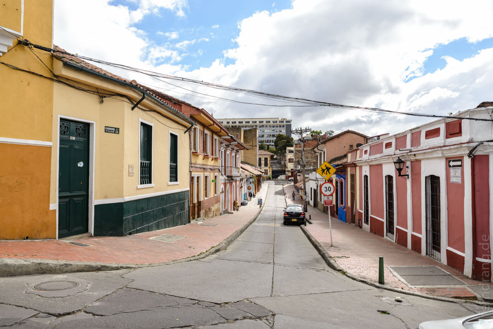
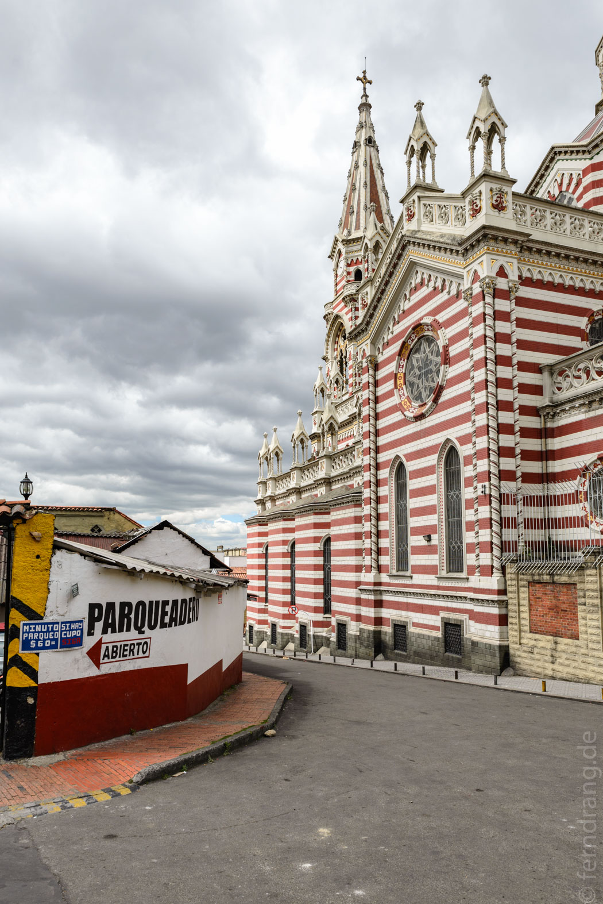
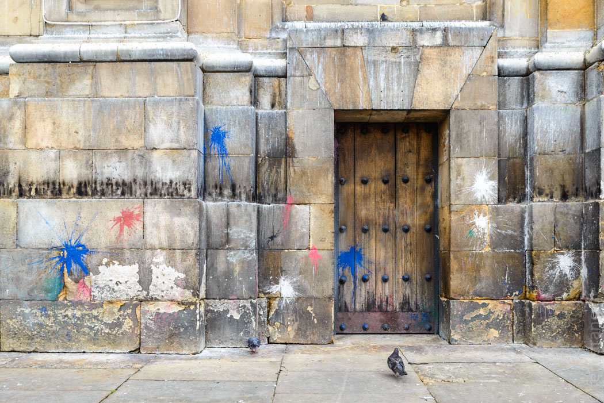
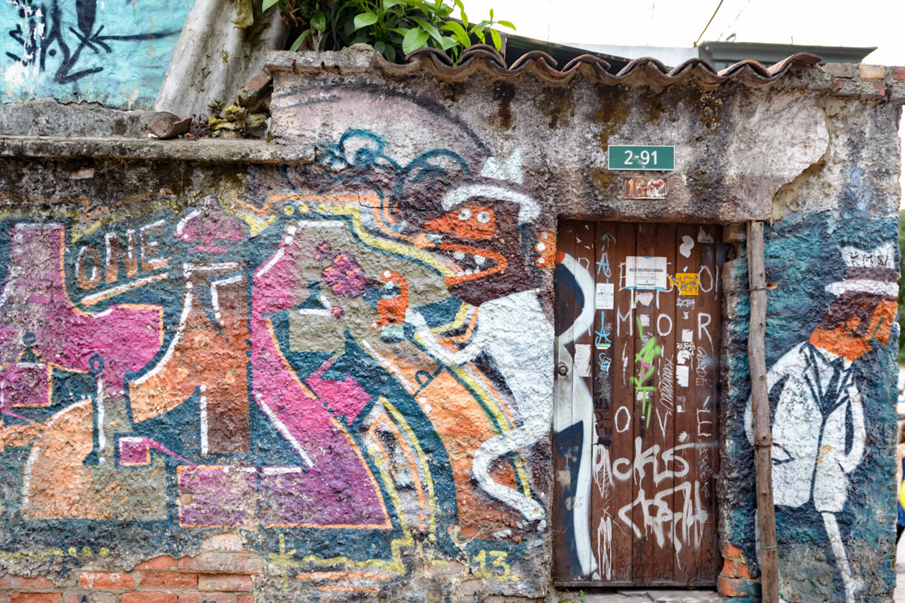
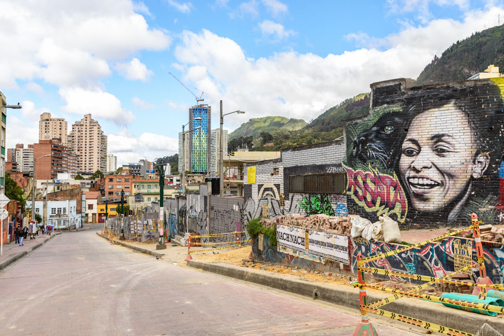
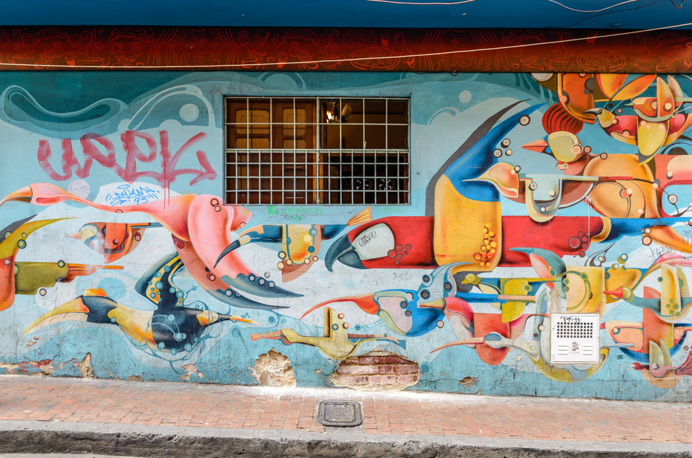
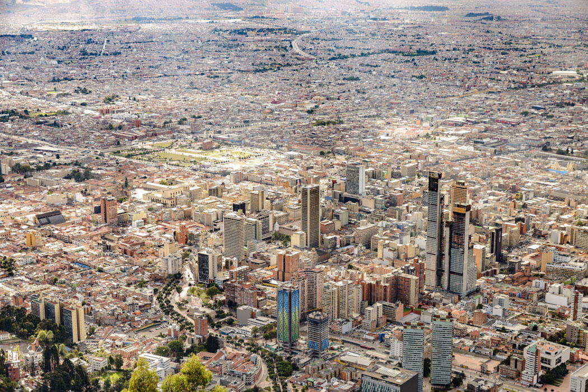
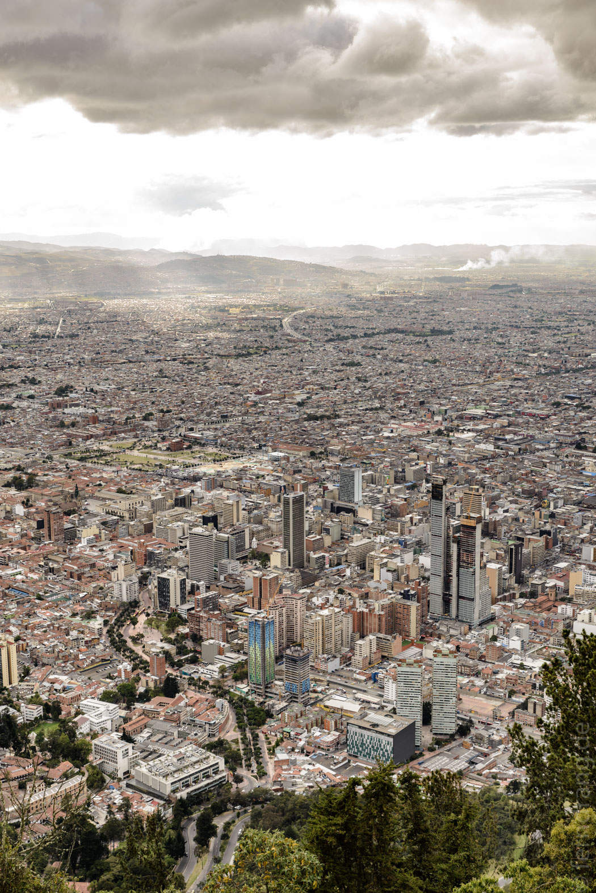
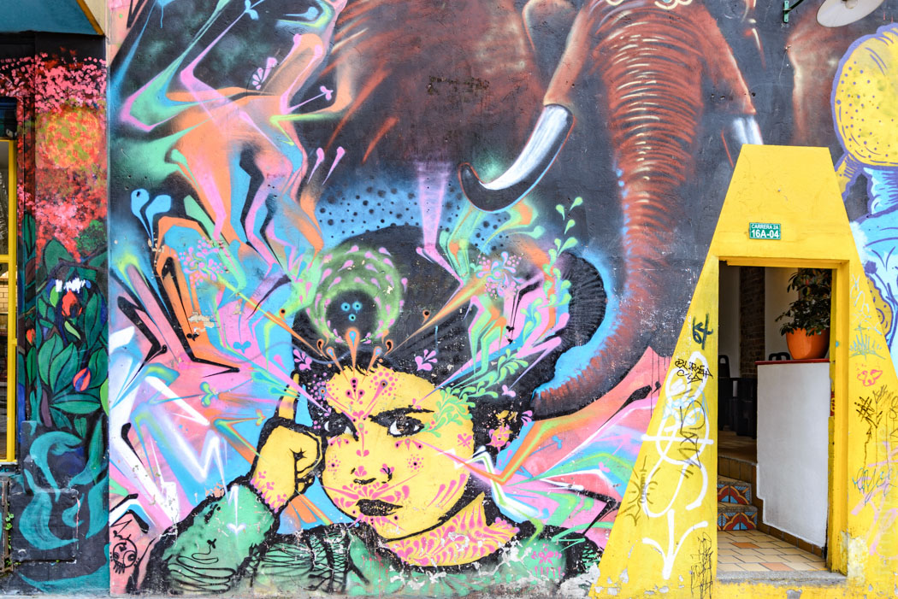

22. Dezember 2015
Bogota
Gegen drei Uhr nachts sind wir in Bogota gelandet. Der Taxifahrer rast durch leere Straßen. Die Bebauung rund um den Flughafen ist sehr modern, auch die Straßen machen einen guten Eindruck. Je mehr man sich der Innenstadt nähert, desto mehr ändert sich das. Dort sind viele ältere und auch heruntergekommenere Häuser. Unser Guesthouse "Arche Noah" liegt im alten Bezirk "La Candeleria" am Hang. Die Zimmer liegen hinter alten Türen um einen Patio und sind modern und praktisch ausgestattet. Wir fallen heute aber nur noch tot ins Bett.
Nach ein paar Stunden Schlaf lassen wir uns das Frühstück auf die hübsche kleine Terrasse bringen. Den Tag lang streifen wir durch Candeleria, der Altstadt von Bogota. Kontinenttypisch erstreckt sich ein Schachbrettmuster kleiner Straßen um die prächtige Plaza Bolivar. Die Häuser sind allesamt alt, und in unterschiedlichem Grad sieht man es ihnen auch an. Dazwischen nehmen hin und wieder alte Kirchen einen Block ein. Auf der Talseite der Plaza erstreckt sich der Regierungsbezirk. Hier sind die Bürgersteige von Soldaten und die Eingänge von der Ehrengarde mit tollen Uniformen bewacht. Hinter den Zäunen sieht man prächtige Villen und Gärten, die leider nicht zugänglich sind.
 Die Hangseite des Viertels ist weniger schick, aber interessanter. Hier verstecken sich teilweise liebevoll aufgemachte Lokale hinter Fassaden mit viel Graffiti. Abends kann man sich in den zahlreichen Bars und Kneipen herumtreiben.
   Wir marschieren erstmal ans Ostende des Viertels, wo eine Seilbahn auf den Monserrate heraufführt. Die Kirche dort oben ist nicht der Rede wert und die Stände ebensowenig. Aber der Blick über Bogota ist fantastisch. Die Stadt erstreckt sich bis an den Horizont. Auf dem Rückweg war plötzlich eine lange Schlange vor der Seilbahn und ganz viele Leute noch dorthin unterwegs. Der Sonnenuntergang auf dem Berg scheint eine beliebte Attraktion zu sein.
 Wir sind stattdessen sehr früh essen gegangen. Das Restaurant mit mexikanisch inspirierter Küche verbirgt sich hinter einem verrückten Graffiti, wie so vieles in der Gegend. Wir können die Augen kaum offen halten und erlösen mit uns mit sehr früh schlafen.
